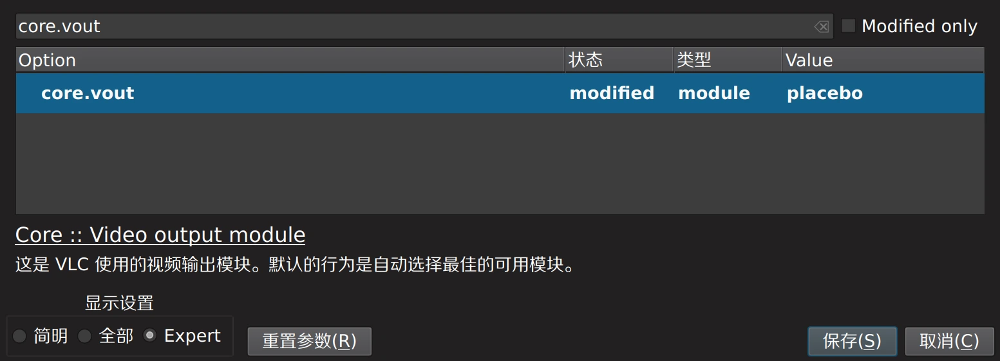
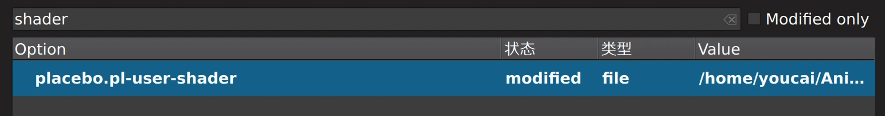
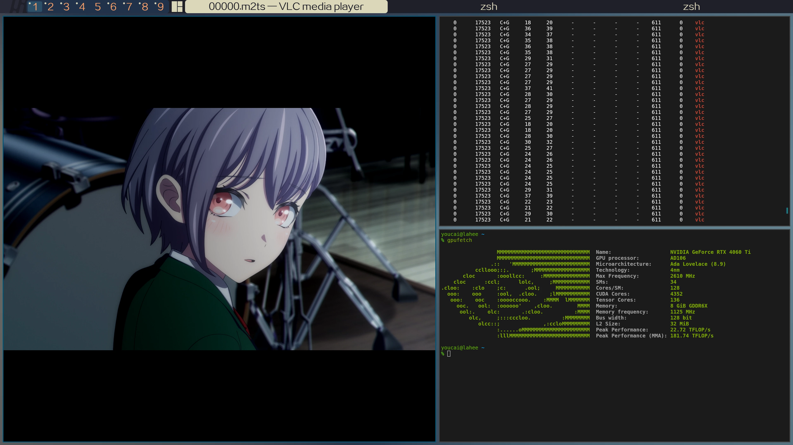

在VLC播放器中使用anime4k等glsl滤镜
众所周知，vlc的可定制性和播放质量一直不如mpv之类的播放器硬核。尤其是mpv的glsl shader功能是无法在vlc 3.0.x中使用的。由于种种原因，多数动漫的原始分辨率在1920x1080。由于动漫本身的画面特性，vlc默认的二次插值在4k屏幕上看起来十分糟糕，甚至不如1080p点对点显示。
一个显而易见的解决方法是直接用mpv看动漫就完了，然而作为没有gui的硬核播放器，用起来还是多少有点难受的。虽然身为linux老炮，我并不排斥用键盘命令行解决一切，不过看动漫本身就是为了放松一下，还是有个gui方便一点。
但是！随着4.x版本vlc的到来，这一切即将成为历史。新版vlc新增了libplacebo作为可选的画面输出模块，libplacebo不但有一堆的内置gpu加速重采样，甚至支持mpv同款的glsl shader！
安装支持libplacebo的vlc
目前只要是3.0.x版本的vlc都是不带libplacebo模块的。由于是新功能可能经常有bug，所以建议直接live at head用git主线最新版完事。
使用Gentoo
首先，直接将vlc新版本的封印解除：
echo "media-video/vlc **" > /etc/portage/package.accept_keywords/20vlc然后，给vlc和ffmpeg打开libplacebo的USE flag：
echo "media-video/ffmpeg libplacebo" > /etc/portage/package.use/20vlc
echo "media-video/vlc libplacebo" > /etc/portage/package.use/20vlc当然，你也可以直接把libplacebo加到global USE。也需要按需求开其他的USE flag，例如加载ass字幕要打开libass。新版的qt前端也需要qml支持。
装就完了：
emerge -avuDN media-video/vlc-9999使用其他发行版
这个就～麻烦了。众所周知vlc的libplacebo支持还需要ffmpeg带着libplacebo支持编译。如果你的发行版ffmpeg没开libplacebo，那么你就得先手动编译一个ffmpeg，再编译一个使用这一份ffmpeg的vlc出来。对vlc来说需要带上--enable-libplacebo就可以了。这里就不详细的描述过程了～
如果是ubuntu用户，可以使用snap里面的vlc 4.0包。也可以考虑使用gentoo prefix之类。
开启libplacebo输出
运行VLC之后，按下Ctrl+P快捷键打开设置，会发现左下角多了一个模式切换，点击最右边切换到“专家”模式。
搜索找到core.vout，这个设置本来的值应该是any，更改成libplacebo

开启glsl滤镜
这里以anime4k为例，首先克隆仓库：
git clone https://github.com/bloc97/Anime4K.git然后，还是在专家模式设置中，查找这个设置：placebo.pl-user-shader

双击编辑，找到刚才克隆的仓库中的glsl shader即可。如果gpu够强，可以直接上超大杯：
Anime4K/glsl/Upscale+Denoise/Anime4K_Upscale_Denoise_CNN_x2_VL.glsl退出重启vlc，就可以使用Anime4k了！
运行结果
使用vlc -vvv启动并打开任意视频，找到大致如下的日志，表明成功使用了libplacebo：
placebo generic debug: Initialized libplacebo v7.349.0 (API v349)下面不远处应该有这样一行日志，表明user shader加载：
placebo generic debug: Loaded user shader:下面会跟着一堆的输出，就是shader的源码。
我的4060ti在使用超大杯扩大1080p动漫到4k的情况下，gpu利用率为25%左右，用去611M显存。
